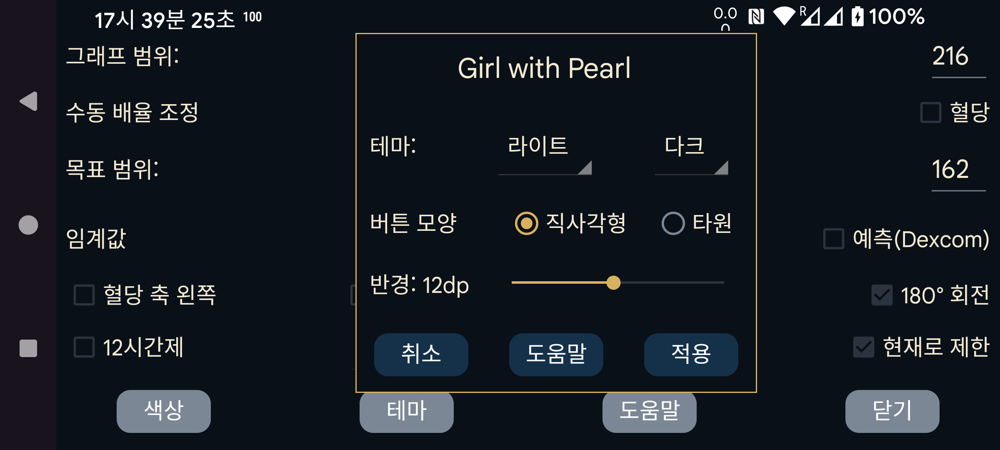

index
de ko nl ru uk en
테마
Juggluco GUI의 색상과 버튼 모양을 변경합니다.
테마: “라이트”는 밝은 배경의 “테마” 목록을 표시하고 “다크”는 어두운 배경으로 표시합니다.
버튼 모양은 타원 또는 직사각형으로 선택할 수 있습니다.
반경: 직사각형 버튼 모서리의 둥근 정도를 변경합니다.
색상과 버튼 모양 변경은 이 화면에서 즉시 보이지만 앱 전체에는 적용을 누른 뒤에 적용됩니다.